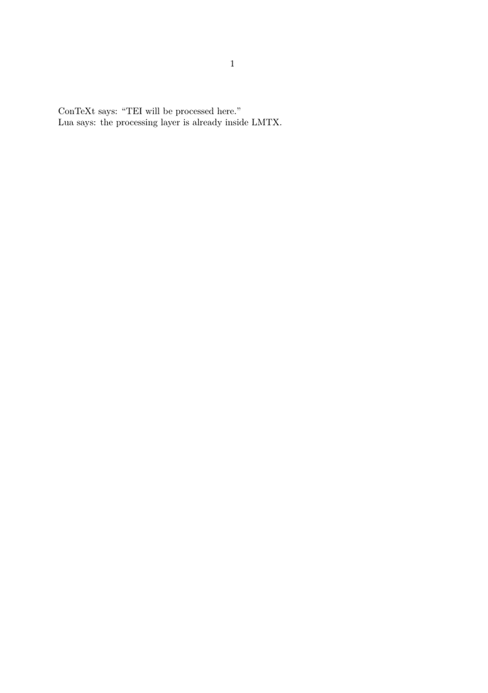
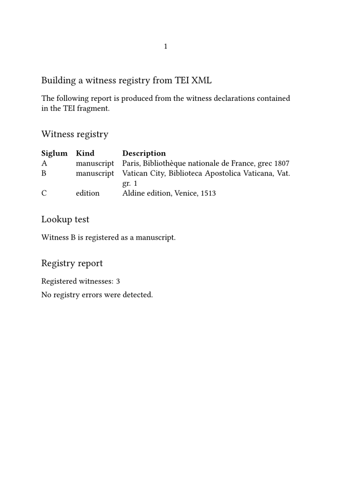
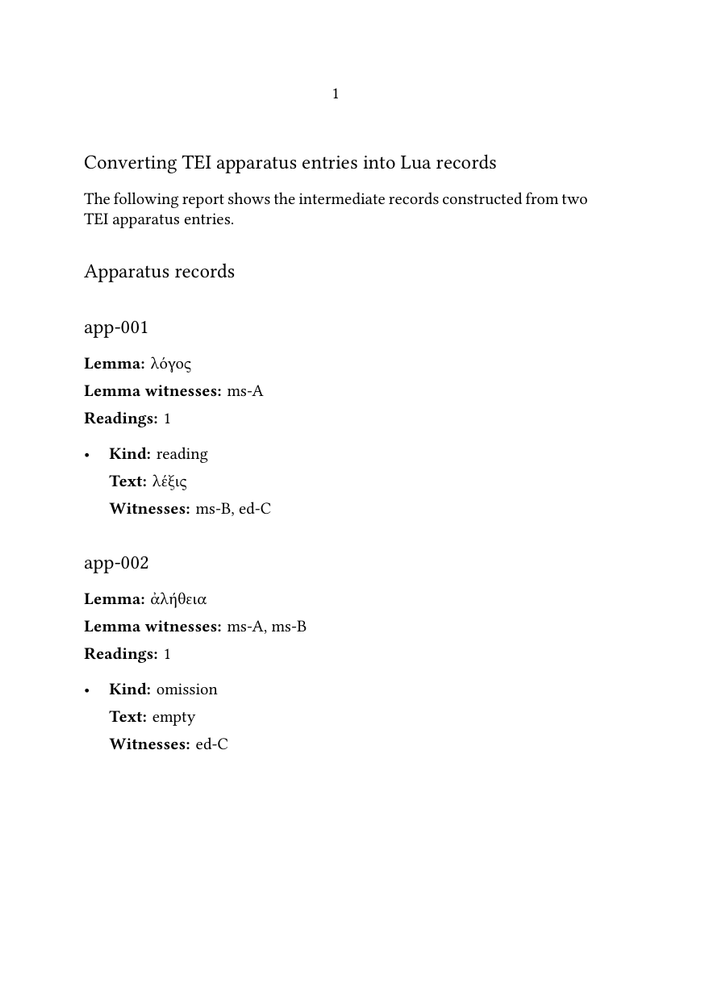
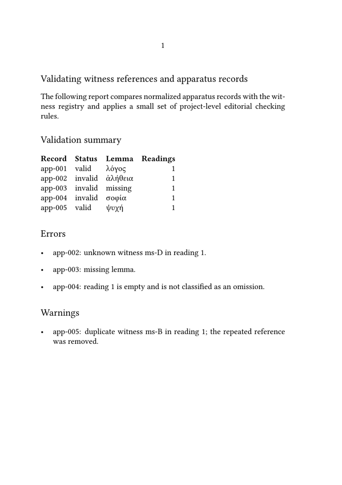
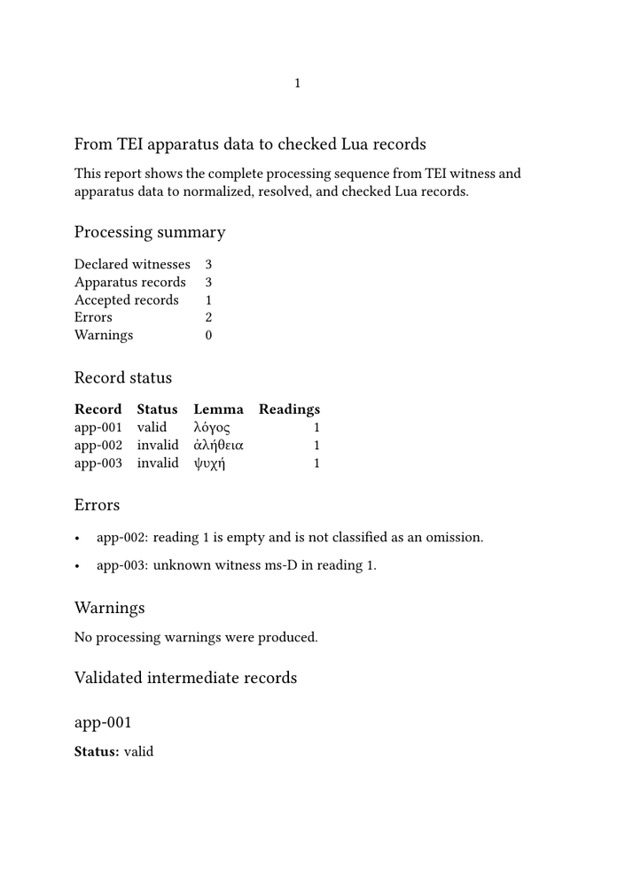

🚧 Under construction — This page and its subpages are currently being revised. Contributions are welcome: feel free to edit and improve them.
Guide 5 of 6 — Processing TEI critical apparatus data with Lua
Previous: Guide 4 — Encoding complex textual variation in TEI · Collection overview · Glossary · Next: Guide 6 — Typesetting a TEI critical apparatus with ConTeXt
What you will build in this guide
Guides 1–4 produced a TEI source containing witness declarations, apparatus entries, references, responsibility, uncertainty, and other editorial distinctions.
Guide 5 does not replace that source. It constructs a controlled intermediate representation:
TEI XML │ ▼ Lua processing ├── extract ├── normalize ├── resolve ├── check project rules └── diagnose │ ▼ editorial records ├── source connection ├── normalized identifiers ├── resolved objects ├── explicit categories ├── validity status └── diagnostics │ ▼ Guide 6: ConTeXt composition
You will build this layer progressively:
- a witness registry;
- normalized apparatus records;
- reference resolution;
- project-level editorial checks;
- errors and warnings;
- accepted and rejected record collections;
- a stable Lua–ConTeXt contract.
The functional examples use a representative subset of Guide 4 so that the processing pipeline remains readable.
Contents
-
1
Processing TEI critical apparatus data with Lua
- 1.1 1. Where this guide fits in the collection
- 1.2 2. Why Lua in an LMTX workflow?
- 1.3 Part I — Understand the processing model
- 1.4 3. From XML syntax to editorial knowledge
- 1.5 4. The processing pipeline
- 1.6 Part II — Build the processing layer
- 1.7 5. Stage 1 — Build a witness registry
- 1.8 6. Stage 2 — Convert apparatus entries into Lua records
- 1.9 7. Stage 3 — Resolve references and check project rules
-
1.10
8. Assemble the complete workflow
- 1.10.1 8.1. The cumulative processing map
- 1.10.2 8.2. Preserve normalized identifiers and resolved objects
- 1.10.3 8.3. Diagnostic reports preserve failures
- 1.10.4 8.4. Complete functional MWE: From TEI apparatus data to checked Lua records
- 1.10.5 8.5. Records prepared for ConTeXt
- 1.10.6 8.6. Result of the complete workflow
- 1.11 Part III — Define the boundaries
- 1.12 9. What Lua should not decide
- 1.13 10. Prepare the Lua–ConTeXt contract
- 1.14 11. What you have built
- 1.15 Related pages
Guides 1–4 progressively constructed the TEI source.
By the end of Guide 4, the document could contain:
TEI
├── declarations
│ ├── witnesses
│ └── editorial responsibility
│
└── text
└── apparatus
├── lem / rdg
├── @wit
├── @resp
├── omissions
├── documentary alterations
├── uncertainty
└── grouped or complex readings
At this point the problem changes.
We no longer ask mainly:
How do we encode another textual phenomenon?
We now ask:
How do we process all these encoded relations consistently and safely?
Guide 5 therefore adds a new layer:
GUIDES 1–4
TEI documentary source
│
▼
encoded witnesses and apparatus
│
▼
GUIDE 5
Lua processing ← NEW
│
▼
checked editorial records
│
▼
GUIDE 6
ConTeXt typesetting
The central architecture is:
DOCUMENTARY SOURCE
TEI XML
│
▼
+----------------------+
| Lua |
| |
| extract |
| normalize |
| resolve |
| validate |
| diagnose |
+----------------------+
│
▼
EDITORIAL RECORDS
│
▼
ConTeXt
│
▼
TYPOGRAPHICAL OUTPUT
Guiding principle.
TEI records the documentary evidence and scholarly relationships. Lua interprets the encoded structures according to explicit editorial rules. ConTeXt gives the resulting records their typographical form.
The three layers cooperate, but they do not have the same responsibility.
1. Where this guide fits in the collection
The six-guide progression can now be understood as:
Guide 1 STRUCTURE
│
▼
Guide 2 IDENTITIES
│
▼
Guide 3 BASIC RELATIONS
│
▼
Guide 4 COMPLEX RELATIONS
│
▼
Guide 5 INTERPRET + VALIDATE ← YOU ARE HERE
│
▼
Guide 6 COMPOSE
How to read this diagram. Guides 1–4 primarily construct the scholarly data model. Guide 5 changes the task from encoding to controlled interpretation and checking. Guide 6 receives the resulting records and concentrates on composition.
The first four guides primarily built the scholarly data model.
Guide 5 transforms that model into a stable intermediate representation that Guide 6 can typeset without repeatedly interpreting raw XML.
The processing system developed here will progressively:
- build a registry of textual witnesses;
- convert TEI apparatus entries into Lua records;
- normalize identifiers, witness lists, and textual values;
- resolve witness references against the registry;
- validate the resulting editorial records;
- report errors and warnings;
- separate accepted records from records requiring correction;
- make checked records available to ConTeXt.
Stage reached.
The TEI source is already rich enough to describe the edition.
Guide 5 does not replace that source. It constructs a controlled processing layer between documentary encoding and typographical composition.
2. Why Lua in an LMTX workflow?
The question should be asked explicitly:
If ConTeXt can already process XML, why introduce Lua?
There are two complementary answers.
2.1. Lua is already part of the LMTX environment
ConTeXt LMTX runs on LuaMetaTeX. Lua is therefore not an external programming environment inserted between TEI and ConTeXt.
A useful mental map is:
ConTeXt LMTX
│
+-------+-------+
│ │
▼ ▼
ConTeXt MkXL LuaMetaTeX
│
└── Lua is available natively
│
▼
TEI XML ─────────────────────► processing
│
▼
ConTeXt
│
▼
page
How to read this diagram. Lua does not introduce a foreign application into the workflow. It uses the programming language already available in the engine environment on which ConTeXt LMTX runs. TEI processing, editorial transformation, and typesetting can therefore remain inside one integrated toolchain.
Why Lua in an LMTX workflow? ConTeXt LMTX runs on LuaMetaTeX. Lua is therefore already available where the XML is being processed and the document is being composed. When editorial relations require reusable normalization, cross-reference lookup, project-level checks, or diagnostic reports, Lua is a natural processing layer within the same environment.
Further reference.
For the engine architecture, see the LuaMetaTeX reference manual.
For programming Lua from ConTeXt, see ConTeXt and Lua programming.
2.2. A minimal proof: Lua is already here
The following Garden example does not perform editorial processing. Its only purpose is to demonstrate that Lua code can run directly inside an LMTX document:
-
\starttext ConTeXt says: \quotation{TEI will be processed here.} \startluacode xml.registerns( "tei", "http://www.tei-c.org/ns/1.0" ) context.par() context("Lua says: the processing layer is already inside LMTX.") \stopluacode \stoptext
-

The important fact is architectural: there is no separate conversion program to launch merely in order to use Lua.
2.3. Direct XML processing remains useful
Lua is not required simply because the source is XML.
For a small or local transformation, ConTeXt XML setups can remain the simplest path:
TEI XML │ ▼ ConTeXt XML setup │ ▼ typeset result
That model was sufficient for the inspection tests in Guides 1–4.
The processing problem changes when each apparatus entry begins to require operations such as:
parse @wit
↓
normalize identifiers
↓
look up declarations
↓
apply project rules
↓
record warnings
↓
retain invalid objects for diagnosis
↓
pass only accepted records to composition
At that point, repeating the same interpretation inside every typographical setup becomes difficult to maintain.
Lua is useful, not mandatory. Direct ConTeXt XML processing remains appropriate when the mapping from XML to output is local and simple. Introduce a Lua intermediate layer when processing becomes relational, reusable, rule-driven, or diagnostic.
2.4. The editorial reason for the intermediate layer
The accumulated TEI data now contain relationships across the document:
witness declaration
▲
│ @wit
│
apparatus reading
responsibility declaration
▲
│ @resp
│
editorial intervention
The task is no longer only to select one XML element. It is to interpret relations consistently across many elements.
The architectural choice is therefore:
DIRECT XML → TYPESETTING
works well while processing is local and simple
BUT
when every apparatus entry may require
normalization + lookup + checks + diagnostics
↓
TEI XML
│
▼
Lua intermediate processing
│
▼
stable editorial records
│
▼
ConTeXt
How to read this diagram. Lua is introduced because the task has changed, not because XML has become unreadable. The intermediate layer centralizes operations that would otherwise be repeated in many typographical macros.
2.5. Division of labour
The three layers remain distinct:
TEI
├── evidence
├── documentary distinctions
└── scholarly assertions
│
▼
Lua
├── extract
├── normalize
├── resolve
├── check project rules
└── diagnose
│
▼
ConTeXt
├── typography
├── punctuation
├── spacing
├── placement
└── page architecture
How to read this diagram. TEI remains the documentary and scholarly source. Lua turns selected encoded relations into controlled editorial objects. ConTeXt determines how those objects appear on the page.
Division of labour. TEI records the scholarly claims; Lua applies documented processing rules to those claims; ConTeXt composes the result. The boundaries are deliberate even though all three layers operate inside one LMTX workflow.
Further reference.
For direct XML processing, see XML setup commands.
For Lua-based XML traversal, see Processing XML with Lua.
For the broader TEI → ConTeXt architecture, see TEI XML.
Stage reached. We now know why Lua belongs in Guide 5: it is already native to the LMTX environment, and the editorial processing has become complex enough to benefit from an explicit intermediate layer.
Part I — Understand the processing model
3. From XML syntax to editorial knowledge
3.1. Reading is not yet interpreting
Consider:
<rdg wit="#ms-A #ed-C">λόγος</rdg>
An XML parser can expose:
element name: rdg text: λόγος @wit: "#ms-A #ed-C"
But the string:
"#ms-A #ed-C"
has not yet become editorial knowledge.
The processing path is:
XML PARSER
wit="#ms-A #ed-C"
│
▼
character string
"#ms-A #ed-C"
LUA PROCESSING
"#ms-A #ed-C"
│
▼
split references
│
▼
A C
│ │
▼ ▼
lookup lookup
│ │
▼ ▼
known? known?
│ │
+---+---+
│
▼
resolved witness relations
Lua may need to establish:
- that the value contains two references;
-
that
#is a reference marker rather than part of the identifier; - that A and C are declared witnesses;
- that their order is meaningful or should be normalized;
- that neither reference has been duplicated accidentally;
- that the references are admissible in the current editorial model.
From syntax to editorial knowledge.
XML parsing makes the encoded structure accessible. Lua processing determines how that structure is to be understood within the rules of the edition.
3.2. Normalization: equivalent notation, one internal form
Equivalent information may appear as:
wit="#ms-A #ms-B" wit=" #ms-A #ms-B " wit="#ms-A #ms-A #ms-B"
If the edition treats spacing differences and repeated references as insignificant, Lua can normalize all three to:
{ "ms-A", "ms-B" }
The operation can be visualized as:
RAW TEI
wit=" #ms-A #ms-B #ms-A "
│
▼
trim spaces
│
▼
"#ms-A #ms-B #ms-A"
│
▼
split
│
A B A
│
▼
deduplicate
│
▼
{ "ms-A", "ms-B" }
Normalization may include:
- removing reference markers;
- trimming insignificant whitespace;
- splitting lists into individual identifiers;
- removing accidental duplicates;
- preserving or standardizing order;
- replacing absent values with explicit internal values;
-
retaining editorial categories such as
omission.
Normalization is an interpretative operation.
It defines which differences in the source are editorially significant and which are merely differences of notation.
Normalization should therefore follow documented project rules rather than being treated as an invisible programming convenience.
3.3. Reference resolution changes the status of a value
Suppose the TEI header declares:
<witness xml:id="ms-A"> Paris, Bibliothèque nationale de France, grec 1807 </witness>
and a reading contains:
<rdg wit="#ms-A">...</rdg>
Before resolution:
#ms-A │ └── character string
After resolution:
#ms-A │ ▼ normalize │ ▼ A │ ▼ registry lookup │ ▼ witness record A ├── siglum ├── description ├── kind └── order
Thus:
STRING │ ▼ IDENTIFIER │ ▼ RESOLVED EDITORIAL OBJECT
How to read this diagram. The characters in @wit begin
as encoded text. Normalization turns them into a controlled identifier;
registry lookup turns that identifier into a known editorial object. This
change of status is one of the main reasons for introducing the
intermediate layer.
If no record exists, the same process produces a detectable editorial problem.
3.4. Project-level validation adds another state
A document may be well-formed XML and still contain unusable apparatus data.
TEI validation and Lua project checks are not the same thing.
Schema validation asks whether a document conforms to the selected TEI model. The Lua checks developed in this guide apply additional rules chosen for this tutorial or for a particular edition: reference integrity, controlled categories, required fields, normalization policy, and the conditions treated as errors or warnings.
A rule enforced here must therefore not be presented as a universal TEI constraint.
Further reference.
Guide 1 introduced the distinction between XML well-formedness, TEI validation, and editorial correctness.
For formal TEI conformance, see the TEI P5 chapter Using the TEI. The checks implemented below belong to the processing profile of this tutorial.
For example:
- a reading may refer to an undeclared witness;
- this tutorial's project profile may require a lemma where the source lacks one;
- an ordinary reading may be empty without being classified as an omission;
- a witness identifier may be declared twice;
- a repeated reference may need normalization;
- an editorial category required by the project may be absent.
The progression is:
XML
│
▼
readable structure
│
▼
normalized Lua record
│
▼
resolved references
│
▼
project-level editorial checking
│
+---------------+----------------+
│ │ │
▼ ▼ ▼
VALID WARNING INVALID
│ │ │
│ │ └── retained for diagnosis
│ │
└───────┬───────┘
│
▼
usable record
Well-formed XML is not necessarily editorially usable XML.
Syntax may be correct while references, classifications, or apparatus relationships remain incomplete or contradictory.
3.5. Separate interpretation from typesetting
Without an intermediate layer, one ConTeXt macro might have to:
read XML ↓ split @wit ↓ remove # ↓ lookup witnesses ↓ check validity ↓ decide omission status ↓ sort sigla ↓ choose punctuation ↓ typeset
That mixes several responsibilities.
The architecture adopted here is:
TEI XML │ ▼ Lua ├── identity ├── normalization ├── resolution ├── consistency └── editorial status │ ▼ checked records │ ▼ ConTeXt ├── placement ├── visual hierarchy ├── spacing ├── punctuation └── page construction
Division of labour.
Lua prepares editorially meaningful records. ConTeXt transforms those records into pages.
4. The processing pipeline
The complete conceptual workflow is cumulative:
TEI documentary source
│
▼
1. EXTRACTION
│
▼
raw Lua values
│
▼
2. NORMALIZATION
│
▼
consistent fields
│
▼
3. REFERENCE RESOLUTION
│
▼
known editorial objects
│
▼
4. VALIDATION
│
├── errors
├── warnings
└── accepted records
│
▼
5. INTERMEDIATE REPRESENTATION
│
▼
records prepared for ConTeXt
│
▼
6. TYPESETTING ← Guide 6
How to read this diagram. Each stage answers a different question. Extraction selects relevant XML structures; normalization controls their surface form; resolution connects references to declarations; project checks test declared editorial rules; the intermediate representation becomes the stable input contract for Guide 6.
| Stage | Input | Main question | Result |
|---|---|---|---|
| Documentary encoding | TEI elements and attributes | What evidence and relationships are being recorded? | Structured XML source |
| Extraction | TEI XML | Which structures are relevant to this task? | Raw Lua values |
| Normalization | Raw strings and content | Which surface differences are insignificant? | Controlled internal fields |
| Reference resolution | Identifiers and references | Which declared object does this value denote? | Resolved editorial objects |
| Validation | Normalized and resolved records | Are the records usable under project rules? | Errors, warnings, valid records |
| Intermediate representation | Validated data | What stable structure should typesetting receive? | Records prepared for ConTeXt |
| Typesetting | Validated records | How should the information appear on the page? | Printed or electronic apparatus |
These are conceptual stages. A practical Lua function may perform several of them together, but the distinctions remain valuable because they show where a decision belongs and where an error should be reported.
4.1. TEI remains the documentary source
The Lua representation is deliberately smaller than the TEI document.
That does not make it a replacement source.
TEI
│
├── documentary richness
├── scholarly distinctions
├── source relationships
└── reusable encoding
│
│ selective transformation
▼
Lua record
│
├── fields needed now
├── normalized values
├── resolved objects
└── source connection
Where practical, a record should retain a connection to its source XML node or identifier so that diagnostics can be traced back to the encoding.
Further reference.
For ConTeXt's Lua-side XML traversal facilities, see Processing XML with Lua.
For the TEI structures being processed, return to Guides 2–4 and the TEI P5 chapter Critical Apparatus.
4.2. Lua creates task-oriented editorial objects
A witness may become:
{
id = "ms-A",
siglum = "A",
description = "Paris, Bibliothèque nationale de France, grec 1807",
kind = "manuscript",
order = 1,
}
An apparatus entry may become:
{
id = "app-001",
lemma = {
text = "λόγος",
witnesses = { "ms-A" },
},
readings = {
{
text = "λέξις",
witnesses = { "ms-B", "ed-C" },
},
},
valid = true,
}
The relationship is:
TEI STRUCTURE
│
▼
identify editorial roles
│
▼
LUA RECORD
│
├── predictable fields
├── normalized values
└── source link
4.3. The intermediate representation is a contract
Once processing is complete, ConTeXt should be able to rely on several properties:
- identifiers have normalized forms;
- witness references have either resolved or been reported;
- apparatus records have predictable fields;
- exceptional readings have explicit categories;
- invalid records are distinguishable from accepted records;
- diagnostics have already been produced.
The intermediate representation is a contract.
Lua guarantees the editorial status and internal structure of accepted records. ConTeXt can therefore concentrate on their presentation instead of reinterpreting XML syntax at every typographical command.
Scope of the processing examples.
Guide 4 introduced responsibility, certainty, documentary substitutions, reading groups, local word-order variation, and unequal textual extent in addition to simple substitutions and omissions.
The functional MWEs below deliberately process a representative subset so
that the pipeline remains readable. The same intermediate architecture can
be extended with fields for @resp, @cert,
documentary operations, reading groups, and other project-specific
structures.
Part II — Build the processing layer
5. Stage 1 — Build a witness registry
Guide 2 declared witnesses in TEI.
Guide 5 now turns those declarations into a processing structure.
5.1. From
<listWit>
to a Lua registry
The TEI structure is:
listWit ├── witness A ├── witness B └── witness C
The processing path is:
TEI listWit │ ▼ collect witness declarations │ ▼ normalize identifiers │ ▼ check uniqueness │ ▼ LUA WITNESS REGISTRY ├── by_id ├── in_order └── errors
The two main collections answer different questions:
witnesses.by_id["ms-B"]
│
└── Which witness is B?
witnesses.in_order[2]
│
└── Which witness occupies this declared position?
Technical note.
Direct lookup and documentary order are different requirements. Keep them explicit rather than relying on one Lua table to represent both implicitly.
5.2. What a witness record contains
A record may contain:
witnesses["A"] = {
id = "ms-A",
siglum = "A",
kind = "manuscript",
description = "Paris, Bibliothèque nationale de France, grec 1807",
order = 1,
}
Conceptually:
TEI witness │ ├── xml:id ─────────► id ├── display value ──► siglum ├── @type ──────────► kind ├── text ───────────► description └── position ───────► order
The exact fields depend on the needs of the edition.
5.3. Registry lookup
Once the registry exists:
"B" │ ▼ witnesses.by_id["ms-B"] │ +───────────────+ │ │ ▼ ▼ found absent │ │ ▼ ▼ witness record unresolved reference
Later apparatus processing can therefore check references without repeatedly
searching the original <listWit>.
5.4. Functional MWE: Building a witness registry from TEI XML
The following example reads witness declarations from a TEI fragment, builds a Lua registry, records errors, and prints a diagnostic report.
It does not yet process apparatus entries. Its sole purpose is to establish the collection of witnesses against which later references will be resolved.
-
\mainlanguage[en] \setuppapersize[A5] \setupbodyfont [libertinus,10pt] \setupwhitespace [medium] \startbuffer[tei-data]
="http://www.tei-c.org/ns/1.0"> \stopbuffer \startluacode xml.registerns( "tei", "http://www.tei-c.org/ns/1.0" ) thirddata = thirddata or {} thirddata.tei_witnesses = { by_id = {}, in_order = {}, errors = {}, } local registry = thirddata.tei_witnesses local function normalize_space(value) if not value then return "" end value = value:gsub("%s+", " ") value = value:gsub("^%s+", "") value = value:gsub("%s+$", "") return value end local function add_error(message) registry.errors[#registry.errors + 1] = message end local function reset_registry() registry.by_id = {} registry.in_order = {} registry.errors = {} end local function register_witness(node) local attributes = node.at or {} local id = attributes["xml:id"] or attributes.id or "" local siglum = attributes.n or "" local kind = attributes.type or "" id = normalize_space(id) siglum = normalize_space(siglum) kind = normalize_space(kind) if siglum == "" then siglum = id end local description = normalize_space(xml.text(node)) if id == "" then add_error( "A witness declaration has no xml:id." ) return end if registry.by_id[id] then add_error( "Duplicate witness identifier: " .. id ) return end local record = { id = id, siglum = siglum, kind = kind ~= "" and kind or "unspecified", description = description, order = #registry.in_order + 1, source = node, } registry.by_id[id] = record registry.in_order[#registry.in_order + 1] = record end function registry.build() reset_registry() local document = xml.convert( buffers.getcontent("tei-data") ) for node in xml.collected(document, "tei:witness") do register_witness(node) end end function registry.lookup(id) return registry.by_id[id] end function registry.typeset() context.subject("Witness registry") context.starttabulate { "|l|l|p|" } context.NC() context.bold("Siglum") context.NC() context.bold("Kind") context.NC() context.bold("Description") context.NC() context.NR() for _, witness in ipairs(registry.in_order) do context.NC() context(witness.siglum) context.NC() context(witness.kind) context.NC() context(witness.description) context.NC() context.NR() end context.stoptabulate() context.blank() context.subject("Lookup test") local selected = registry.lookup("ms-B") if selected then context( "Witness B is registered as a %s.", selected.kind ) else context( "Witness B is not registered." ) end context.blank() context.subject("Registry report") context( "Registered witnesses: %s", #registry.in_order ) context.par() if #registry.errors == 0 then context( "No registry errors were detected." ) else context( "Errors: %s", #registry.errors ) context.startitemize() for _, message in ipairs(registry.errors) do context.startitem() context(message) context.stopitem() end context.stopitemize() end end \stopluacode \starttext \subject{Building a witness registry from TEI XML} The following report is produced from the witness declarations contained in the TEI fragment. \blank \ctxlua{ thirddata.tei_witnesses.build() thirddata.tei_witnesses.typeset() } \stoptextGuide 5 witness registry Unpublished teaching example.
="ms-A" n="A" type="manuscript"> Paris, Bibliothèque nationale de France, grec 1807 ="ms-B" n="B" type="manuscript"> Vatican City, Biblioteca Apostolica Vaticana, Vat. gr. 1 ="ed-C" n="C" type="edition"> Aldine edition, Venice, 1513 ="parallel-segmentation" location="internal"/> ="p1">The mind seeks unity.
-

The central result of the example is not the table printed on the page. The important result is the Lua registry itself:
witnesses.by_id witnesses.in_order witnesses.errors
These three fields represent different kinds of knowledge about the TEI document:
-
by_idrecords which witnesses are known and makes them
directly accessible;
-
in_orderrecords the sequence in which the witnesses were
declared;
-
errorsrecords conditions that prevent reliable interpretation.
The source XML contains witness declarations. The Lua registry turns those declarations into a collection of identifiable, ordered, and verifiable editorial objects.
5.5. Testing missing and duplicate identifiers
The validation behaviour can be tested by adding the following declarations to the TEI buffer:
<witness type="manuscript"> An unidentified manuscript </witness> <witness xml:id="ms-A" type="manuscript"> A second declaration using the identifier A </witness>
The first declaration cannot be referenced because it has no
xml:id. The second makes the identifier A
ambiguous because that identifier is already present in the registry.
The processing layer therefore reports both conditions and excludes the problematic declarations from the usable registry.
This is an important difference between merely traversing the XML tree and constructing an editorial representation. Traversal can find both elements. Registry construction must decide whether they can function as stable objects within the edition.
5.6. Result of Stage 1
At this point the source declarations have become a controlled registry:
TEI witness declarations
│
▼
Lua witness registry
├── direct lookup
├── preserved order
└── declaration errors
Stage reached.
Witnesses are no longer only XML elements. They are now identifiable, ordered, and verifiable editorial objects against which later references can be checked.
6. Stage 2 — Convert apparatus entries into Lua records
We now bring in the structure constructed in Guide 3:
app
├── lem: λόγος
│ └── @wit="#ms-A"
└── rdg: λέξις
└── @wit="#ms-B #ed-C"
The next transformation is:
TEI APP │ ▼ extract fields │ ▼ normalize witness lists │ ▼ classify editorial roles │ ▼ LUA APPARATUS RECORD
6.1. From XML hierarchy to explicit fields
For:
<app xml:id="app-001"> <lem wit="#ms-A">λόγος</lem> <rdg wit="#ms-B #ed-C">λέξις</rdg> </app>
we want:
record
├── id: app-001
├── lemma
│ ├── text: λόγος
│ └── witnesses: { A }
│
└── readings
└── reading 1
├── text: λέξις
├── witnesses: { B, C }
└── kind: reading
This is not yet a typeset apparatus entry. It is an editorial object with predictable fields.
6.2. Normalize witness lists
The path is:
@wit="#ms-B #ed-C"
│
▼
raw string
│
▼
remove # markers
│
▼
split values
│
▼
remove accidental duplicates
│
▼
{ "ms-B", "ed-C" }
An irregular source such as:
wit=" #ms-B #ed-C #ms-B "
can therefore produce the same normalized list while still allowing a warning to record that B was duplicated in the original value.
6.3. Preserve editorial categories
An empty value alone is not enough to explain its meaning.
Compare:
{
kind = "reading",
text = "λέξις",
}
with:
{
kind = "omission",
text = "",
}
The relation is:
TEI distinction
│
▼
explicit Lua category
│
▼
later validation + typography
Do not flatten significant distinctions.
An omission, missing data, unreadable text, and a processing failure should not all become the same empty string merely because their visible text is empty.
6.4. Functional MWE: Converting TEI apparatus entries into Lua records
The following example extends the witness-registry mechanism developed in section 4.
It reads two apparatus entries, normalizes their witness lists, preserves the order of their readings, and constructs Lua records.
The example displays the resulting records for inspection. It does not yet validate whether every witness reference is known.
-
\mainlanguage[en] \setuppapersize[A5] \setupbodyfont [libertinus,10pt] \setupwhitespace [medium] \startbuffer[tei-data]
="http://www.tei-c.org/ns/1.0"> \stopbuffer \startluacode xml.registerns( "tei", "http://www.tei-c.org/ns/1.0" ) thirddata = thirddata or {} thirddata.tei_apparatus = { records = {}, errors = {}, } local apparatus = thirddata.tei_apparatus local function normalize_space(value) if not value then return "" end value = value:gsub("%s+", " ") value = value:gsub("^%s+", "") value = value:gsub("%s+$", "") return value end local function normalize_witnesses(value) local result = {} local seen = {} value = normalize_space(value) for reference in value:gmatch("%S+") do local id = reference:gsub("^#", "") if id ~= "" and not seen[id] then result[#result + 1] = id seen[id] = true end end return result end local function make_reading_record(node, app_kind) local attributes = node.at or {} local kind = normalize_space(attributes.type) if kind == "" then if app_kind == "omission" then kind = "omission" else kind = "reading" end end return { kind = kind, text = normalize_space(xml.text(node)), witnesses = normalize_witnesses(attributes.wit), source = node, } end local function make_lemma_record(node) if not node then return nil end local attributes = node.at or {} return { text = normalize_space(xml.text(node)), witnesses = normalize_witnesses(attributes.wit), source = node, } end local function make_apparatus_record(node, position) local attributes = node.at or {} local app_kind = normalize_space(attributes.type) if app_kind == "" then app_kind = "variation" end local lemma_node = xml.first(node, "tei:lem") local record = { id = normalize_space(attributes["xml:id"]) ~= "" and normalize_space(attributes["xml:id"]) or "app-" .. position, kind = app_kind, lemma = make_lemma_record(lemma_node), readings = {}, order = position, source = node, valid = true, } for reading_node in xml.collected(node, "tei:rdg") do record.readings[#record.readings + 1] = make_reading_record(reading_node, app_kind) end return record end function apparatus.build() apparatus.records = {} apparatus.errors = {} local document = xml.convert( buffers.getcontent("tei-data") ) local position = 0 for node in xml.collected(document, "tei:app") do position = position + 1 apparatus.records[#apparatus.records + 1] = make_apparatus_record(node, position) end end local function typeset_witness_list(list) if #list == 0 then context("none") return end context(table.concat(list, ", ")) end function apparatus.typeset() context.subject("Apparatus records") for _, record in ipairs(apparatus.records) do context.subsubject(record.id) if record.lemma then context.bold("Lemma: ") context(record.lemma.text) context.par() context.bold("Lemma witnesses: ") typeset_witness_list(record.lemma.witnesses) else context.bold("Lemma: ") context("missing") end context.par() context.bold("Readings: ") context(#record.readings) context.startitemize() for _, reading in ipairs(record.readings) do context.startitem() context.bold("Kind: ") context(reading.kind) context.par() context.bold("Text: ") if reading.text ~= "" then context(reading.text) else context("empty") end context.par() context.bold("Witnesses: ") typeset_witness_list(reading.witnesses) context.stopitem() end context.stopitemize() end end \stopluacode \starttext \subject{Converting TEI apparatus entries into Lua records} The following report shows the intermediate records constructed from two TEI apparatus entries. \blank \ctxlua{ thirddata.tei_apparatus.build() thirddata.tei_apparatus.typeset() } \stoptextGuide 5 apparatus records Unpublished teaching example.
="ms-A" n="A" type="manuscript"> Paris, Bibliothèque nationale de France, grec 1807 ="ms-B" n="B" type="manuscript"> Vatican City, Biblioteca Apostolica Vaticana, Vat. gr. 1 ="ed-C" n="C" type="edition"> Aldine edition, Venice, 1513 ="parallel-segmentation" location="internal"/> ="app-001"> ="#ms-A">λόγος ="#ms-B #ed-C">λέξις ="app-002" type="omission"> ="#ms-A #ms-B">ἀλήθεια ="#ed-C"/> -

The first record contains:
-
the lemma
λόγος, associated with identifier
ms-A(display labelA);
-
the reading
λέξις, associated with identifiers
ms-Banded-C(display labelsBandC).
The second record contains:
-
the lemma
ἀλήθεια, associated with identifiers
ms-Aandms-B;
- an explicitly classified omission associated with
ed-C.
The empty text of the omission is therefore not treated as an ordinary empty
reading. Guide 4 classified the apparatus entry with
type="omission"; the Lua conversion carries that project
classification into the reading record:
kind = "omission"
This is an example of contextual interpretation: an empty
<rdg/> acquires its editorial meaning from the apparatus
classification rather than from emptiness alone.
6.5. Result of Stage 2
At the end of this stage, each TEI <app> element has become
a structured Lua record with:
- a stable identifier;
- one lemma record;
- an ordered collection of reading records;
- normalized witness identifiers;
- explicit editorial categories;
- a reference to the source XML node;
- a predictable structure for later validation and typesetting.
The transformation has therefore moved beyond XML traversal.
Lua has identified the editorial roles of the elements, separated their contents into explicit fields, and constructed apparatus objects that can be examined independently of the original XML syntax.
The witness identifiers contained in these records have been normalized, but they have not yet been verified against the witness registry.
That verification is the purpose of the next section.
Stage reached.
Each <app> now has a predictable Lua representation.
Its witness identifiers are normalized, but they have not yet been proved to
denote declared witnesses.
7. Stage 3 — Resolve references and check project rules
The two structures built so far can now be joined.
7.1. Join the witness registry and apparatus records
WITNESS REGISTRY APPARATUS RECORD
by_id["ms-A"] ◄──────────────────────── A
by_id["ms-B"] ◄──────────────────────── B
by_id["ed-C"] ◄──────────────────────── C
by_id["ms-D"] ? ◄────────────────────── D
unresolved
For each normalized identifier:
identifier
│
▼
registry lookup
│
+--+--+
│ │
▼ ▼
found absent
│ │
▼ ▼
resolved ERROR
object
This is the point where a character string becomes a relation to a known editorial object.
7.2. Check the project apparatus profile
Reference resolution is only one part of validation.
A project may also require additional rules beyond TEI schema conformance. The small profile used by this tutorial asks, for example:
apparatus record
│
├── lemma exists?
├── readings exist?
├── ordinary readings contain text?
├── empty readings classified explicitly?
├── witnesses declared?
└── duplicates reported?
A record may therefore be perfectly readable as XML while being unusable as an editorial record.
7.3. Errors and warnings have different meanings
IRREGULARITY
│
▼
can processing establish
safe editorial meaning?
│
+--+--+
│ │
yes no
│ │
▼ ▼
WARNING ERROR
│ │
▼ ▼
usable invalid
record record
Typical errors include:
- an undeclared witness;
- a missing lemma where this tutorial's project profile requires one;
- an ordinary reading whose empty content is unexplained;
- ambiguous duplicate witness declarations.
Typical warnings may include:
- a repeated reference that was normalized;
- a generated identifier;
- a condition that is technically usable but deserves editorial review.
Project checks change the status of the data.
A reference is no longer merely present: it is resolved or unresolved. An apparatus entry is no longer merely readable: it is usable, usable with warnings, or invalid.
7.4. Functional MWE: Resolving references and checking apparatus records
The following example combines a witness registry with several apparatus records.
It deliberately includes:
- one valid apparatus entry;
- one reading that refers to an undeclared witness;
- one apparatus entry without a lemma;
- one empty reading that is not classified as an omission;
- one repeated witness reference that can be normalized but should be reported.
The output separates errors from warnings and marks each apparatus record as valid or invalid.
-
\mainlanguage[en] \setuppapersize[A5] \setupbodyfont [libertinus,10pt] \setupwhitespace [medium] \startbuffer[tei-data]
="http://www.tei-c.org/ns/1.0"> \stopbuffer \startluacode xml.registerns( "tei", "http://www.tei-c.org/ns/1.0" ) thirddata = thirddata or {} thirddata.tei_validation = { witnesses = { by_id = {}, in_order = {}, }, records = {}, errors = {}, warnings = {}, } local validation = thirddata.tei_validation local function normalize_space(value) if not value then return "" end value = value:gsub("%s+", " ") value = value:gsub("^%s+", "") value = value:gsub("%s+$", "") return value end local function add_error(message) validation.errors[#validation.errors + 1] = message end local function add_warning(message) validation.warnings[#validation.warnings + 1] = message end local function normalize_witnesses(value) local result = {} local seen = {} local duplicates = {} value = normalize_space(value) for reference in value:gmatch("%S+") do local id = reference:gsub("^#", "") if id ~= "" then if seen[id] then duplicates[#duplicates + 1] = id else result[#result + 1] = id seen[id] = true end end end return result, duplicates end local function build_witness_registry(document) validation.witnesses.by_id = {} validation.witnesses.in_order = {} for node in xml.collected(document, "tei:witness") do local attributes = node.at or {} local id = normalize_space( attributes["xml:id"] or attributes.id ) if id == "" then add_error( "A witness declaration has no xml:id." ) elseif validation.witnesses.by_id[id] then add_error( "Duplicate witness identifier: " .. id ) else local siglum = normalize_space(attributes.n) if siglum == "" then siglum = id end local record = { id = id, siglum = siglum, kind = normalize_space(attributes.type) ~= "" and normalize_space(attributes.type) or "unspecified", description = normalize_space(xml.text(node)), order = #validation.witnesses.in_order + 1, source = node, } validation.witnesses.by_id[id] = record validation.witnesses.in_order[ #validation.witnesses.in_order + 1 ] = record end end end local function make_text_record(node, default_kind) if not node then return nil end local attributes = node.at or {} local witnesses, duplicates = normalize_witnesses(attributes.wit) local kind = normalize_space(attributes.type) if kind == "" then kind = default_kind end return { kind = kind, text = normalize_space(xml.text(node)), witnesses = witnesses, duplicates = duplicates, source = node, } end local function build_apparatus_records(document) validation.records = {} local position = 0 for node in xml.collected(document, "tei:app") do position = position + 1 local attributes = node.at or {} local id = normalize_space( attributes["xml:id"] or attributes.id ) if id == "" then id = "app-" .. position add_warning( id .. ": generated identifier." ) end local app_kind = normalize_space(attributes.type) if app_kind == "" then app_kind = "variation" end local record = { id = id, kind = app_kind, lemma = make_text_record( xml.first(node, "tei:lem"), "lemma" ), readings = {}, order = position, source = node, valid = true, } for reading_node in xml.collected(node, "tei:rdg") do record.readings[#record.readings + 1] = make_text_record( reading_node, app_kind == "omission" and "omission" or "reading" ) end validation.records[ #validation.records + 1 ] = record end end local function validate_witness_list( record, list, location ) for _, id in ipairs(list) do if not validation.witnesses.by_id[id] then add_error( string.format( "%s: unknown witness %s in %s.", record.id, id, location ) ) record.valid = false end end end local function report_duplicates( record, duplicates, location ) for _, id in ipairs(duplicates) do add_warning( string.format( "%s: duplicate witness %s in %s; " .. "the repeated reference was removed.", record.id, id, location ) ) end end local function validate_record(record) if not record.lemma then add_error( record.id .. ": missing lemma." ) record.valid = false else if record.lemma.text == "" and record.kind ~= "addition" then add_error( record.id .. ": the lemma is empty under the current " .. "project profile." ) record.valid = false end validate_witness_list( record, record.lemma.witnesses, "lemma" ) report_duplicates( record, record.lemma.duplicates, "lemma" ) end if #record.readings == 0 then add_warning( record.id .. ": no variant readings." ) end for index, reading in ipairs(record.readings) do local location = "reading " .. index validate_witness_list( record, reading.witnesses, location ) report_duplicates( record, reading.duplicates, location ) if reading.kind == "omission" then if reading.text ~= "" then add_warning( string.format( "%s: %s is classified as an " .. "omission but contains text.", record.id, location ) ) end elseif reading.text == "" then add_error( string.format( "%s: %s is empty and is not " .. "classified as an omission.", record.id, location ) ) record.valid = false end end end function validation.build() validation.errors = {} validation.warnings = {} validation.records = {} local document = xml.convert( buffers.getcontent("tei-data") ) build_witness_registry(document) build_apparatus_records(document) for _, record in ipairs(validation.records) do validate_record(record) end end local function typeset_status(record) if record.valid then context("valid") else context("invalid") end end function validation.typeset() context.subject("Validation summary") context.starttabulate { "|l|l|l|r|" } context.NC() context.bold("Record") context.NC() context.bold("Status") context.NC() context.bold("Lemma") context.NC() context.bold("Readings") context.NC() context.NR() for _, record in ipairs(validation.records) do context.NC() context(record.id) context.NC() typeset_status(record) context.NC() if record.lemma then context(record.lemma.text) else context("missing") end context.NC() context(#record.readings) context.NC() context.NR() end context.stoptabulate() context.blank() context.subject("Errors") if #validation.errors == 0 then context("No validation errors were detected.") else context.startitemize() for _, message in ipairs(validation.errors) do context.startitem() context(message) context.stopitem() end context.stopitemize() end context.blank() context.subject("Warnings") if #validation.warnings == 0 then context("No validation warnings were produced.") else context.startitemize() for _, message in ipairs(validation.warnings) do context.startitem() context(message) context.stopitem() end context.stopitemize() end end \stopluacode \starttext \subject{Validating witness references and apparatus records} The following report compares normalized apparatus records with the witness registry and applies a small set of project-level editorial checking rules. \blank \ctxlua{ thirddata.tei_validation.build() thirddata.tei_validation.typeset() } \stoptextGuide 5 project-level checks Unpublished teaching example.
="ms-A" n="A" type="manuscript"> Paris, Bibliothèque nationale de France, grec 1807 ="ms-B" n="B" type="manuscript"> Vatican City, Biblioteca Apostolica Vaticana, Vat. gr. 1 ="ed-C" n="C" type="edition"> Aldine edition, Venice, 1513 ="parallel-segmentation" location="internal"/> ="app-001"> ="#ms-A">λόγος ="#ms-B #ed-C">λέξις ="app-002"> ="#ms-A">ἀλήθεια ="#ms-B #ms-D">ἀληθεία ="app-003"> ="#ms-B">φωνή ="app-004"> ="#ms-A #ms-B">σοφία ="#ed-C"/> ="app-005"> ="#ms-A">ψυχή ="#ms-B #ms-B #ed-C">πνοή -

The expected validation summary marks:
-
app-001as valid; -
app-002as invalid because witnessDhas not
been declared;
-
app-003as invalid because it has no lemma; -
app-004as invalid because its empty reading is not classified
as an omission;
-
app-005as valid, but accompanied by a warning because witness
Bwas repeated in the original@witvalue.
The repeated reference in app-005 is removed during
normalization. The warning nevertheless preserves knowledge of the irregularity
found in the source.
7.5. Result of Stage 3
At the end of this stage, the processing layer knows more than the XML parser alone can establish.
It knows:
- which witness references denote declared editorial objects;
- which apparatus records satisfy the required structural rules;
- which records cannot safely be passed to typesetting;
- which irregularities were normalized without invalidating the record;
- which diagnostic messages must be presented to the editor.
Project-level checking therefore produces a new processing state.
The original TEI document contains encoded claims and relationships. The Lua layer tests those claims against the declarations and rules of the edition.
A reference is no longer merely syntactically present: it is either resolved or unresolved.
An apparatus entry is no longer merely well-formed: it is either editorially usable, usable with warnings, or invalid.
The next section will combine witness registration, apparatus conversion, reference resolution, and validation in a single complete workflow.
Stage reached.
The processing layer can now distinguish accepted editorial objects from records that require correction, while preserving diagnostic information about the latter.
8. Assemble the complete workflow
The three stages can now be combined while remaining conceptually distinct.
8.1. The cumulative processing map
TEI SOURCE
│
+---------------+---------------+
│ │
▼ ▼
witness declarations apparatus entries
│ │
▼ ▼
Lua registry Lua apparatus records
│ │
│ normalization
│ │
+-------------+-----------------+
│
▼
reference resolution
│
▼
validation
│
+--------+--------+
│ │
▼ ▼
accepted invalid
records records
│ │
│ └── diagnostics
▼
ConTeXt input
│
▼
TYPOGRAPHY
The important collections are:
processing.records
│
└── every constructed apparatus record
including invalid records retained for inspection
processing.accepted
│
└── records that have passed validation
and may be passed safely to typesetting
This prevents bad data from silently reaching the final apparatus without throwing away the information needed to diagnose it.
8.2. Preserve normalized identifiers and resolved objects
A useful record can retain both levels:
reading
├── witness_ids
│ └── { "ms-B", "ed-C" }
│
└── witnesses
├── witness record B
└── witness record C
Thus:
ENCODED REFERENCE
│
▼
NORMALIZED IDENTIFIER
│
▼
RESOLVED OBJECT
The intermediate representation remains traceable to the source while also being convenient for later processing.
8.3. Diagnostic reports preserve failures
The processing system should expose both success and failure:
ALL APPARATUS RECORDS
│
validate
│
+----------+----------+
│ │
▼ ▼
accepted invalid
│ │
▼ ▼
processing.accepted retained in records
│ │
▼ └── diagnostics
ConTeXt
Preserve both success and failure.
Accepted records protect the typesetting stage. Rejected records remain traceable so that the editor can inspect and correct the source or the processing rules.
8.4. Complete functional MWE: From TEI apparatus data to checked Lua records
The following MWE performs the complete processing sequence developed in this guide.
-
\mainlanguage[en] \setuppapersize[A5] \setupbodyfont [libertinus,10pt] \setupwhitespace [medium] \startbuffer[tei-data]
="http://www.tei-c.org/ns/1.0"> \stopbuffer \startluacode xml.registerns( "tei", "http://www.tei-c.org/ns/1.0" ) thirddata = thirddata or {} thirddata.tei_complete = { witnesses = { by_id = {}, in_order = {}, }, records = {}, accepted = {}, errors = {}, warnings = {}, } local processing = thirddata.tei_complete local function normalize_space(value) if not value then return "" end value = value:gsub("%s+", " ") value = value:gsub("^%s+", "") value = value:gsub("%s+$", "") return value end local function add_global_error(message) processing.errors[ #processing.errors + 1 ] = message end local function add_global_warning(message) processing.warnings[ #processing.warnings + 1 ] = message end local function add_record_error(record, message) record.errors[ #record.errors + 1 ] = message record.valid = false add_global_error( record.id .. ": " .. message ) end local function add_record_warning(record, message) record.warnings[ #record.warnings + 1 ] = message add_global_warning( record.id .. ": " .. message ) end local function reset_processing() processing.witnesses.by_id = {} processing.witnesses.in_order = {} processing.records = {} processing.accepted = {} processing.errors = {} processing.warnings = {} end local function normalize_witnesses(value) local identifiers = {} local duplicates = {} local seen = {} value = normalize_space(value) for reference in value:gmatch("%S+") do local id = reference:gsub("^#", "") if id ~= "" then if seen[id] then duplicates[ #duplicates + 1 ] = id else identifiers[ #identifiers + 1 ] = id seen[id] = true end end end return identifiers, duplicates end local function build_witness_registry(document) for node in xml.collected(document, "tei:witness") do local attributes = node.at or {} local id = normalize_space( attributes["xml:id"] or attributes.id ) if id == "" then add_global_error( "A witness declaration has no xml:id." ) elseif processing.witnesses.by_id[id] then add_global_error( "Duplicate witness identifier: " .. id ) else local kind = normalize_space( attributes.type ) local siglum = normalize_space(attributes.n) if siglum == "" then siglum = id end local record = { id = id, siglum = siglum, kind = kind ~= "" and kind or "unspecified", description = normalize_space( xml.text(node) ), order = #processing.witnesses.in_order + 1, source = node, } processing.witnesses.by_id[id] = record processing.witnesses.in_order[ #processing.witnesses.in_order + 1 ] = record end end end local function make_text_record( node, default_kind ) if not node then return nil end local attributes = node.at or {} local witness_ids, duplicates = normalize_witnesses( attributes.wit ) local kind = normalize_space( attributes.type ) if kind == "" then kind = default_kind end return { kind = kind, text = normalize_space( xml.text(node) ), witness_ids = witness_ids, witnesses = {}, duplicates = duplicates, valid = true, source = node, } end local function build_apparatus_records(document) local position = 0 for node in xml.collected(document, "tei:app") do position = position + 1 local attributes = node.at or {} local id = normalize_space( attributes["xml:id"] or attributes.id ) local generated_id = false if id == "" then id = "app-" .. position generated_id = true end local app_kind = normalize_space(attributes.type) if app_kind == "" then app_kind = "variation" end local record = { id = id, kind = app_kind, lemma = make_text_record( xml.first(node, "tei:lem"), "lemma" ), readings = {}, order = position, valid = true, errors = {}, warnings = {}, source = node, } if generated_id then add_record_warning( record, "generated apparatus identifier." ) end for reading_node in xml.collected(node, "tei:rdg") do record.readings[ #record.readings + 1 ] = make_text_record( reading_node, "reading" ) end processing.records[ #processing.records + 1 ] = record end end local function resolve_witnesses( record, text_record, location ) text_record.witnesses = {} for _, id in ipairs( text_record.witness_ids ) do local witness = processing.witnesses.by_id[id] if witness then text_record.witnesses[ #text_record.witnesses + 1 ] = witness else text_record.valid = false add_record_error( record, string.format( "unknown witness %s in %s.", id, location ) ) end end for _, id in ipairs( text_record.duplicates ) do add_record_warning( record, string.format( "duplicate witness %s in %s; " .. "the repeated reference was removed.", id, location ) ) end end local function validate_record(record) if not record.lemma then add_record_error( record, "missing lemma." ) else if record.lemma.text == "" and record.kind ~= "addition" then add_record_error( record, "the lemma is empty under the current " .. "project profile." ) end resolve_witnesses( record, record.lemma, "lemma" ) end if #record.readings == 0 then add_record_warning( record, "no variant readings." ) end for index, reading in ipairs( record.readings ) do local location = "reading " .. index resolve_witnesses( record, reading, location ) if reading.kind == "omission" then if reading.text ~= "" then add_record_warning( record, location .. " is classified as an omission " .. "but contains text." ) end elseif reading.text == "" then reading.valid = false add_record_error( record, location .. " is empty and is not classified " .. "as an omission." ) end end if record.valid then processing.accepted[ #processing.accepted + 1 ] = record end end function processing.build() reset_processing() local document = xml.convert( buffers.getcontent("tei-data") ) build_witness_registry(document) build_apparatus_records(document) for _, record in ipairs( processing.records ) do validate_record(record) end end local function typeset_identifier_list(list) if #list == 0 then context("none") else context( table.concat(list, ", ") ) end end local function resolved_sigla(list) local sigla = {} for _, witness in ipairs(list) do sigla[#sigla + 1] = witness.siglum end return sigla end local function typeset_status(valid) if valid then context("valid") else context("invalid") end end local function typeset_messages( title, messages, empty_message ) context.subject(title) if #messages == 0 then context(empty_message) return end context.startitemize() for _, message in ipairs(messages) do context.startitem() context(message) context.stopitem() end context.stopitemize() end function processing.typeset_summary() context.subject("Processing summary") context.starttabulate { "|l|r|" } context.NC() context("Declared witnesses") context.NC() context(#processing.witnesses.in_order) context.NC() context.NR() context.NC() context("Apparatus records") context.NC() context(#processing.records) context.NC() context.NR() context.NC() context("Accepted records") context.NC() context(#processing.accepted) context.NC() context.NR() context.NC() context("Errors") context.NC() context(#processing.errors) context.NC() context.NR() context.NC() context("Warnings") context.NC() context(#processing.warnings) context.NC() context.NR() context.stoptabulate() context.blank() context.subject("Record status") context.starttabulate { "|l|l|l|r|" } context.NC() context.bold("Record") context.NC() context.bold("Status") context.NC() context.bold("Lemma") context.NC() context.bold("Readings") context.NC() context.NR() for _, record in ipairs( processing.records ) do context.NC() context(record.id) context.NC() typeset_status(record.valid) context.NC() if record.lemma then context(record.lemma.text) else context("missing") end context.NC() context(#record.readings) context.NC() context.NR() end context.stoptabulate() context.blank() typeset_messages( "Errors", processing.errors, "No processing errors were detected." ) context.blank() typeset_messages( "Warnings", processing.warnings, "No processing warnings were produced." ) end function processing.typeset_records() context.subject( "Validated intermediate records" ) for _, record in ipairs( processing.records ) do context.subsubject(record.id) context.bold("Status: ") typeset_status(record.valid) context.par() if record.lemma then context.bold("Lemma: ") context(record.lemma.text) context.par() context.bold( "Normalized lemma references: " ) typeset_identifier_list( record.lemma.witness_ids ) context.par() context.bold( "Resolved lemma witnesses: " ) typeset_identifier_list( resolved_sigla( record.lemma.witnesses ) ) context.par() else context.bold("Lemma: ") context("missing") context.par() end for index, reading in ipairs( record.readings ) do context.bold( "Reading %s kind: ", index ) context(reading.kind) context.par() context.bold( "Reading %s text: ", index ) if reading.text ~= "" then context(reading.text) elseif reading.kind == "omission" then context("omission") else context("empty") end context.par() context.bold( "Normalized reading references: " ) typeset_identifier_list( reading.witness_ids ) context.par() context.bold( "Resolved reading witnesses: " ) typeset_identifier_list( resolved_sigla( reading.witnesses ) ) context.par() end end end \stopluacode \starttext \subject{From TEI apparatus data to checked Lua records} This report shows the complete processing sequence from TEI witness and apparatus data to normalized, resolved, and checked Lua records. \blank \ctxlua{ thirddata.tei_complete.build() thirddata.tei_complete.typeset_summary() thirddata.tei_complete.typeset_records() } \stoptextGuide 5 complete processing workflow Unpublished teaching example.
="ms-A" n="A" type="manuscript"> Paris, Bibliothèque nationale de France, grec 1807 ="ms-B" n="B" type="manuscript"> Vatican City, Biblioteca Apostolica Vaticana, Vat. gr. 1 ="ed-C" n="C" type="edition"> Aldine edition, Venice, 1513 ="parallel-segmentation" location="internal"/> ="app-001"> ="#ms-A">λόγος ="#ms-B #ed-C">λέξις ="app-002" type="omission"> ="#ms-A #ms-B">ἀλήθεια ="#ed-C"/> ="app-003"> ="#ms-A">ψυχή ="#ms-B #ms-D">πνοή -

The expected summary contains:
- three declared witnesses;
- three apparatus records;
- two accepted records;
- one error;
- no warnings.
The records app-001 and app-002 are accepted.
In app-001, the normalized identifiers
ms-B and ed-C are resolved to witness records
whose reader-facing labels are B and C.
In app-002, the empty reading is accepted because its
kind is explicitly recorded as omission.
The record app-003 is rejected because the reference
ms-D cannot be resolved to a declared witness. Its normalized identifiers remain visible,
and the successfully resolved witness B is retained, but the
record is not included in:
processing.accepted
8.5. Records prepared for ConTeXt
The collection:
processing.records
contains every apparatus record constructed from the TEI source, including invalid records retained for inspection.
The collection:
processing.accepted
contains only records that have passed validation and may safely be transmitted to the typesetting layer.
This distinction prevents invalid data from silently reaching the final apparatus while preserving enough information for diagnosis and correction.
A record prepared for ConTeXt now possesses:
- a stable apparatus identifier;
- normalized lemma and reading text;
- explicit editorial categories;
- normalized witness identifiers;
- resolved witness objects;
- documentary order;
- source-node references;
- validity information;
- errors and warnings.
ConTeXt will therefore not need to rediscover the meaning of
@wit, search the TEI witness declarations, distinguish omissions
from missing data, or decide whether unresolved references should be printed.
The next guide can begin from records whose editorial status has already been made explicit.
8.6. Result of the complete workflow
The complete workflow does not merely transfer information from one notation to another.
It successively changes the epistemic status of the data:
| Stage | Status of the data |
|---|---|
| TEI encoding | Witnesses and variants are documented through elements, attributes, identifiers, and references. |
| Extraction | The relevant XML structures become accessible to Lua. |
| Normalization | Notational variations are reduced to controlled internal forms. |
| Reference resolution | Character strings become relations to known editorial objects. |
| Validation | Encoded claims are tested against declarations and editorial rules. |
| Intermediate representation | The accepted records form an explicit and reusable body of editorial knowledge. |
The final Lua records are therefore not neutral copies of the XML source.
They are the result of documented interpretative operations whose assumptions, successes, and failures can be inspected.
This intermediate representation is what makes a reliable separation between scholarly data processing and typographical composition possible.
Stage reached. the data has not yet been typeset, but its editorial status has been made explicit. This is the stable point at which Guide 6 can take over.
Part III — Define the boundaries
9. What Lua should not decide
The processing layer now performs substantial interpretative work. That does not mean that every decision belongs in Lua.
The three layers should remain distinguishable. This repetition of the TEI → Lua → ConTeXt architecture is intentional: here the diagram no longer explains what each layer can do, but what each layer should not silently take over from the others.
TEI
│
├── evidence
├── documentary distinctions
└── scholarly assertions
│
▼
Lua
│
├── extract
├── normalize
├── resolve
├── validate
└── diagnose
│
▼
ConTeXt
│
├── typography
├── punctuation
├── spacing
├── placement
└── page architecture
9.1. Lua should not silently repair the TEI source
If the source contains:
<rdg wit="#ms-D">πνοή</rdg>
but no witness D has been declared, Lua may report:
app-003: unknown witness D in reading 1.
It should not silently invent witness D.
That would turn programmatic invention into apparently documented evidence.
Do not repair silently.
A controlled default may be legitimate when the project explicitly authorizes it, but the intervention should remain visible through a warning, generated value, or another diagnostic field.
9.2. Lua should not erase significant TEI distinctions
These should not all become:
text = ""
without further qualification:
omission lacuna unreadable text absent data editorial suppression processing failure
A record should retain the relevant category:
{
kind = "omission",
text = "",
}
or, where appropriate:
{
kind = "lacuna",
text = "",
}
The reduction from TEI to Lua should therefore be selective rather than destructive.
9.3. Lua should not determine typography prematurely
A record may state:
kind = "omission"
It should not normally need to state:
print the abbreviation "om." use an italic font insert exactly 0.5 em space
Those are ConTeXt decisions.
The relation should remain:
EDITORIAL CATEGORY
kind = "omission"
│
▼
ConTeXt rendering policy
│
├── om.
├── omitted
├── ∅
└── another documented convention
Keeping these decisions separate allows typography to change without reconstructing the editorial records.
9.4. Lua should not replace editorial judgment
Lua can test whether:
- a witness has been declared;
- a reference resolves;
- required fields exist;
- a category belongs to a controlled set;
- a record satisfies declared consistency rules.
It cannot determine every scholarly question, for example:
- whether two readings should be grouped together;
- whether a difficult reading is genuinely conjectural;
- whether a witness should be considered primary or secondary;
- whether an apparatus boundary is philologically appropriate.
Project checks make assumptions explicit; they do not replace scholarship.
Lua can test the formal consequences of editorial rules. The rules themselves still depend on scholarly judgment.
10. Prepare the Lua–ConTeXt contract
The checked Lua records now form a stable boundary between interpretation and composition.
10.1. The Lua–ConTeXt contract
A record passed to ConTeXt may now contain:
record ├── id ├── kind ├── lemma │ ├── text │ ├── witness_ids │ └── resolved witnesses │ ├── readings │ ├── text │ ├── kind │ ├── witness_ids │ └── resolved witnesses │ ├── responsibility (when processed) ├── certainty (when processed) ├── documentary (when processed) ├── order ├── source ├── valid └── diagnostics
ConTeXt therefore does not need to:
-
parse
@wit; - remove reference markers;
-
search
<listWit>; - decide whether C exists;
- distinguish an omission from unexplained missing text;
- determine whether an unresolved record should be printed.
It receives records whose editorial status is already explicit.
10.2. What ConTeXt will decide
Guide 6 can now concentrate on questions such as:
- how lemmas and readings are formatted;
- how witness sigla are separated;
- how omissions are displayed;
- how apparatus entries are ordered and grouped;
- how several apparatus layers are distinguished;
- where notes and apparatus blocks are placed;
- how page and line breaking are controlled;
- how the same editorial data adapts to different layouts.
The transition is:
GUIDES 1–4
BUILD TEI
│
▼
GUIDE 5
INTERPRET + VALIDATE
│
▼
checked Lua records
│
▼
GUIDE 6
COMPOSE
10.3. Preparing complex scholarly pages
The same intermediate model can support richer passage records containing, for example:
{
passage_id = "passage-001",
texts = {
greek = { ... },
latin = { ... },
translation = { ... },
},
apparatus = {
textual = { ... },
sources = { ... },
translation = { ... },
},
bibliography = { ... },
alignment = { ... },
validation = {
valid = true,
errors = {},
warnings = {},
},
}
The point is not to reproduce the final page as a giant typesetting macro. The processing layer prepares structured editorial objects from which ConTeXt can construct several coordinated typographical regions.
11. What you have built
Guide 5 has introduced a conceptual shift.
The first four guides primarily built encoded scholarly structures. This guide has shown how those structures become controlled editorial objects.
11.1. The cumulative transformation
TEI ENCODING
witnesses + apparatus
│
▼
EXTRACTION
accessible XML structures
│
▼
NORMALIZATION
controlled identifiers and values
│
▼
REFERENCE RESOLUTION
strings become known objects
│
▼
VALIDATION
claims tested against rules
│
▼
DIAGNOSTICS
successes and failures remain visible
│
▼
INTERMEDIATE REPRESENTATION
validated editorial knowledge
│
▼
ConTeXt
11.2. The status of the information changes at every stage
A witness value can move through:
encoded string
"#ms-A #ms-B"
│
▼
normalized identifiers
{ "ms-A", "ms-B" }
│
▼
resolved objects
{ witness_A, witness_B }
│
▼
validated relation
│
▼
editorial knowledge
ready for typesetting
Normalization and validation are therefore not merely technical cleanup. They are documented interpretative operations.
11.3. Diagnostics preserve the limits of interpretation
An invalid record should not disappear without explanation.
The processing layer can preserve:
invalid record ├── normalized fields ├── successfully resolved references ├── unresolved references ├── source connection └── diagnostic messages
Thus failure remains inspectable and correctable.
11.4. The complete six-guide architecture is now visible
GUIDE 1
TEI structure
│
▼
GUIDE 2
witness identities
│
▼
GUIDE 3
basic apparatus relations
│
▼
GUIDE 4
complex textual relations
│
▼
GUIDE 5
normalized + resolved + checked records
│
▼
GUIDE 6
page composition
Guide 5 complete.
The data has not yet received its final typography, but its editorial status is explicit. This is the stable point at which Guide 6 can take over.
11.5. Continue with Guide 6
The central question is no longer:
What does this TEI data mean?
Guide 5 has established a controlled answer in the intermediate records.
The next question is:
How should this validated editorial knowledge be composed on the page?
Guide 6 shows how ConTeXt can turn those records into a scholarly page, including:
- formatted lemmas, readings, and witness sigla;
- representations of omissions and other editorial categories;
- one or more apparatus layers;
- coordinated source text and translation;
- bibliographical notes;
- complex page architectures whose documentary richness remains legible.
- Next: Guide 6 — Typesetting a TEI critical apparatus with ConTeXt
Guide 5 of 6 — Processing TEI critical apparatus data with Lua
Previous: Guide 4 — Encoding complex textual variation in TEI · Collection overview · Glossary · Next: Guide 6 — Typesetting a TEI critical apparatus with ConTeXt
Related pages
- Building critical editions from TEI XML
- Understanding TEI documents for critical editions
- Declaring witnesses in TEI critical editions
- Encoding a basic critical apparatus in TEI
- Encoding complex textual variation in TEI
- Typesetting a TEI critical apparatus with ConTeXt
- Glossary of terms used in the TEI XML critical edition guides
- TEI XML
- XML
- ConTeXt and Lua programming
- Processing XML with Lua